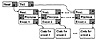

All discrete-event simulations have a common structure. Regardless of the system being modeled, the simulation will have some of the components described below. If a general-purpose language is used, all components have to be developed by the analyst. A simulation language provides some of the components and leaves others for the analyst. The components are as follows:
- 1. Event Scheduler: It keeps a linked list of events waiting to happen. The scheduler allows the events to be manipulated in various ways. Some of these manipulation activities are as follows:
- (a) Schedule event X at time T.
- (b) Hold event X for a time interval dt.
- (c) Cancel a previously scheduled event X.
- (d) Hold event X indefinitely (until it is scheduled by another event).
- (e) Schedule an indefinitely held event.
Event scheduler is one of the most frequently executed components of the simulation. It is executed before every event, and it may be called several times during one event to schedule other new events. Since the event scheduling has a significant impact on the computational efficiency of a simulation, the topic is discussed further in Section 24.6.
- 2. Simulation Clock and a Time-advancing Mechanism: Each simulation has a global variable representing simulated time. The scheduler is responsible for advancing this time. There are two ways of doing this. The first way, called the unit time approach, increments time by small increment and then checks to see if there are any events that can occur. The second approach, called the event-driven approach, increments the time automatically to the time of the next earliest occurring event. The unit time approach is not generally used in computer simulations.
- 3. System State Variables: These are global variables that describe the state of the system. For example, in the CPU scheduling simulation, the system state variable is the number of jobs in the queue. This is a global variable that is distinct from local variables such as CPU time required for a job, which would be stored in the data structure representing the job.
- 4. Event Routines: Each event is simulated by its routine. These routines update the system state variables and schedule other events. For example, in simulating a CPU scheduling mechanism, one might need routines to handle the three events of job arrivals, job scheduling, and job departure.
- 5. Input Routines: These get the model parameters, such as mean CPU demand per job, from the user. It is better to ask for all input at the beginning of a simulation and then free the user, since simulations generally take a long time to complete. The input routines typically allow a parameter to be varied in a specified manner. For example, the simulation may be run with mean CPU demand varying from 1 to 9 milliseconds in steps of 2 milliseconds. Each set of input values defines one iteration that may have to be repeated several times with different seeds. Thus, each single execution of the simulation consists of several iterations, and each iteration consists of several repetitions.
- 6. Report Generator: These are the output routines executed at the end of the simulation. They calculate the final result and print in a specified format.
- 7. Initialization Routines: These set the initial state of the system state variables and initialize various random-number generation streams. It is suggested that there be separate routines to initialize the state at the beginning of a simulation, at the beginning of an iteration, and at the beginning of a repetition.
- 8. Trace Routines: These print out intermediate variables as the simulation proceeds. They help debug the simulation program. It is advisable that the trace have an on/off feature so that it can be turned off for final production runs of the model. A model may even allow the ability to interrupt the execution of the model from the keyboard and turn the trace on or off.
- 9. Dynamic Memory Management: The number of entities in a simulation changes continuously as new entities are generated and old ones are destroyed. This requires periodic garbage collection. Most simulation languages and many general-purpose languages provide this automatically. In other cases, the programmer has the burden of writing codes for dynamic memory management.
- 10. Main Program: This brings all the routines together. It calls input routines, initializes the simulation, executes various iterations, and finally, calls the output routines.
24.6 EVENT-SET ALGORITHMS
In discrete-event simulations, it is necessary to ensure that the events occur in the proper order and at the proper time. Most simulation languages provide facilities for this. However, for simulations written in general-purpose languages, the programmer must implement this facility. Sometimes, even while using a simulation language, analysts may prefer to use their own event-set algorithm. For example, efficient implementation of the event-set algorithm has resulted, in some cases, in as much as 30% savings in total processor time.
Event scheduling is usually done by keeping an ordered linked list of future event notices. Each notice contains the time at which the event should occur and a pointer to the code that must be executed at that time. There are two operations that are performed frequently on this set: one to insert new events in the set and one to find the next (earliest) event and remove it from the set. The choice of the data structure used to maintain this set affects the processor time required for the two operations. Some data structures have very little overhead for insertion but require considerable processing to find the next event. Other data structures do all the work at the time of insertion so that finding the next event is straightforward. The choice of the data structure is therefore based on the frequency of insertion and removals and on the average number of events in the future set. Some of the data structures that have been proposed are as follows:

FIGURE 24.7 Doubly linked list.
){kind=link}
){kind=link}